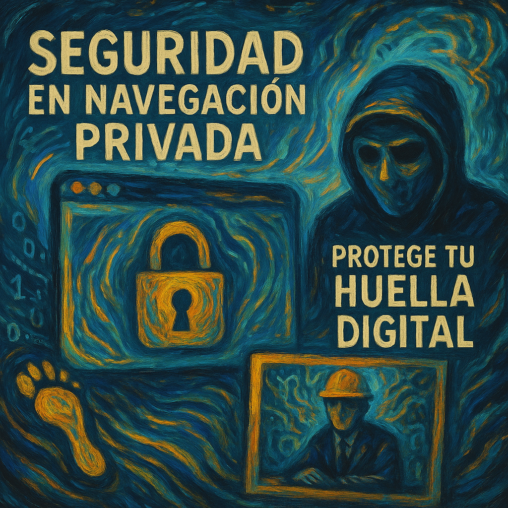

Seguridad en Navegación Privada: Protege tu Huella Digital
En un mundo cada vez más interconectado, tu privacidad online es un activo invaluable. Nuestro servicio de Seguridad en Navegación Privada está diseñado para usuarios exigentes que buscan proteger su identidad, datos y actividades en línea de miradas indiscretas, rastreadores y amenazas cibernéticas.
¿Por qué es crucial la Navegación Privada?
Cada clic, búsqueda o sitio web que visitas puede dejar un rastro. Esta información es codiciada por anunciantes, corporaciones e incluso actores maliciosos. La navegación privada te empodera, permitiéndote explorar la web con mayor anonimato, seguridad y control sobre tus datos personales.
Nuestras Soluciones de Privacidad Digital Incluyen:
- Configuración de VPNs (Redes Privadas Virtuales): Te ayudamos a seleccionar e implementar VPNs robustas para encriptar tu tráfico de internet y ocultar tu dirección IP real.
- Navegadores Seguros y Extensiones de Privacidad: Asesoramiento e instalación de navegadores enfocados en la privacidad y extensiones que bloquean rastreadores, scripts y anuncios invasivos.
- Gestión Segura de Contraseñas: Implementación de gestores de contraseñas para crear y almacenar credenciales fuertes y únicas de forma segura.
- Bloqueo de Rastreadores y Cookies de Terceros: Configuraciones avanzadas para minimizar el seguimiento de tu actividad online a través de diferentes sitios web.
- Asesoramiento en Hábitos de Navegación Segura: Te capacitamos en buenas prácticas para reducir tu exposición a riesgos como phishing, malware y otras amenazas.
- Configuración de DNS Privado: Uso de servidores DNS que no registran tus consultas, añadiendo una capa extra de privacidad.
Beneficios de Navegar con Seguridad Mejorada:
Con nuestras soluciones, podrás disfrutar de una experiencia online más tranquila y segura, sabiendo que tu información personal está mejor protegida. Reduce el spam, evita la publicidad dirigida basada en tu historial y minimiza el riesgo de robo de identidad o seguimiento no deseado.
Toma el control de tu privacidad digital hoy. En Estudio Fractal, te ofrecemos las herramientas y el conocimiento para navegar con confianza.
Solicitar este Servicio